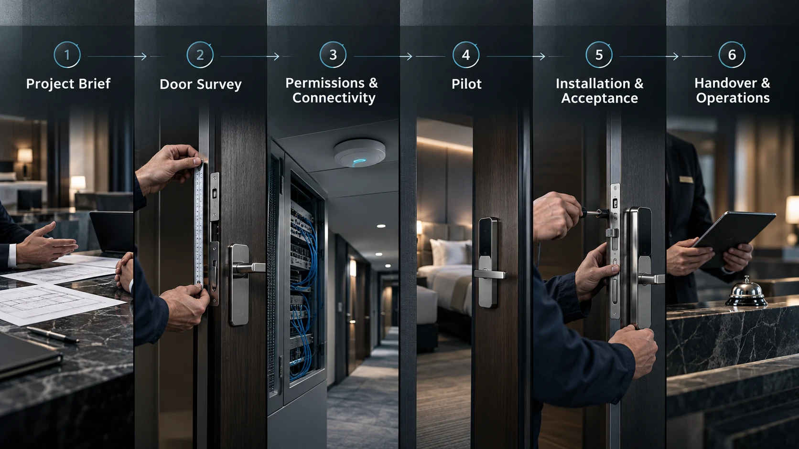
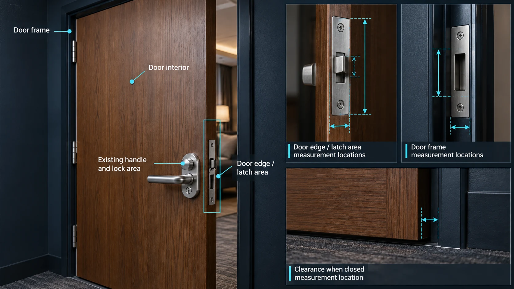
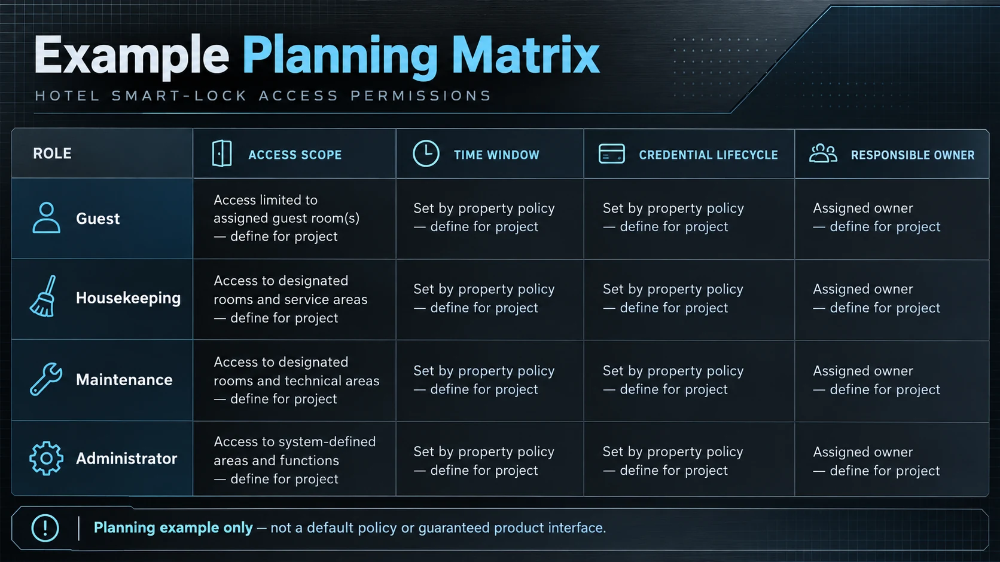
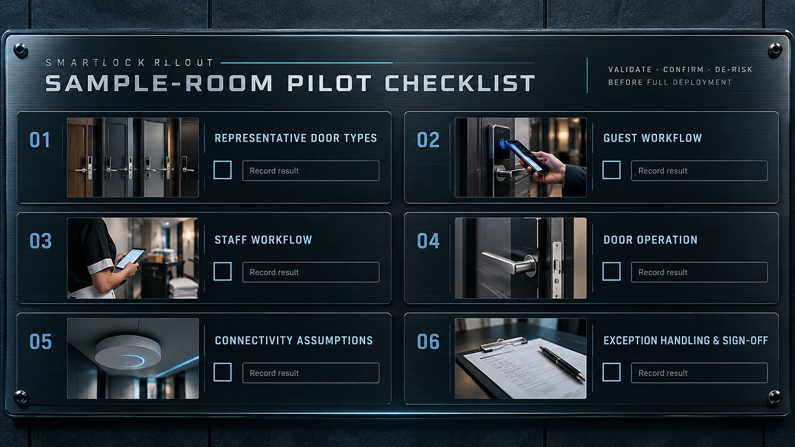
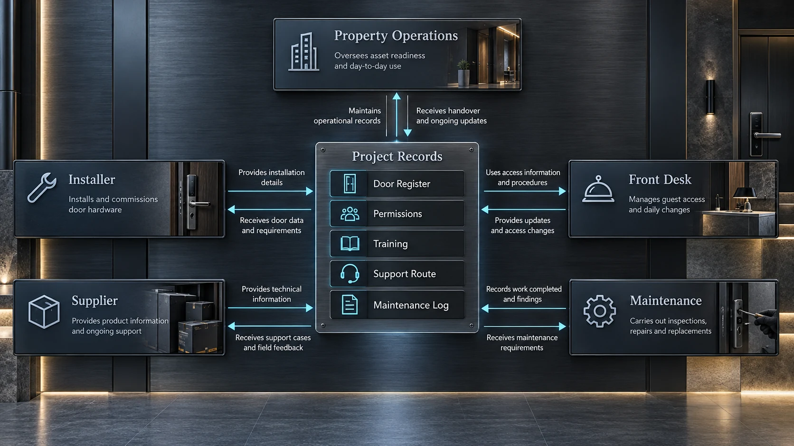

本文是项目规划清单，不代表任何特定产品规格。各项功能、接口和运行条件须由相关供应商与项目参与方核实后再作承诺。
酒店智能锁项目不只是选一把锁。门体条件、住客与员工流程、系统边界、安装控制和日常运营需要一起规划，才能让项目从方案走到交付。

1. 先整理项目需求
可将本清单用于酒店或类似商业门禁项目的规划与交付。询价或安排门体勘查前，先收集影响项目的基础信息。
- 物业类型、所在地、运营模式，以及房间和受控门数量。
- 分期安排；门体勘查、样板房试点、安装、调试和开业的目标时间。
- 运营、IT、安保、采购、安装与验收的责任人。
- 现有开门方式、必要集成、施工时段、网络条件和本地维护安排。
把假设列成问题，指定负责人和完成时间。例如谁批准房间权限、谁提供门体资料、谁决定异常门型是否可接受。
2. 勘查门体并确认适配
同一物业可能有多种门和门框结构，外观相似也不一定相同。应抽查有代表性的门组并记录差异，不要假设一个房间能代表整栋楼。
- 门材质、厚度、结构和饰面；门框、扣板、间隙、密封条及明显变形或损伤。
- 现有锁体、锁舌或锁栓、把手、锁芯、保留五金、开门方向和日常闭合情况。
- 安装空间、周围障碍、电源条件及适用时的电池更换或维修空间。
- 若方案依赖网络，记录门边和公共区域的连接条件；并核实当地专业人员识别的消防、生命安全、无障碍和物业特殊要求。

照片应覆盖门边、门框、现有五金和周边环境，必要时带比例参照。统一测量方式，并将记录关联到房间或门组。把勘查结果与拟用配置和安装方式逐项核对，标出未确认尺寸、特殊结构及改造需求，请供应商和安装方确认适配。相似外观或产品图片不能作为适配证明。
3. 梳理权限与联网方式
写清哪些人需要在什么条件下进入哪些区域，包括住客、客房服务、维修、管理人员、承包方，以及运营计划中涉及的应急或安保角色。
- 凭证由谁创建和审批；权限何时生效、到期及如何延长。
- 各角色可进入哪些门区；凭证遗失、共享、过期或疑似泄露时如何处理。
- 谁能调整权限；可查看哪些记录、由谁查看，并按物业政策保存多久。

梳理系统组件如何通信、拟用网络或网关设备，以及配置与支持责任人。如涉及 PMS、手机凭证或其他接口，先写清流程并由双方确认范围。向供应商核实断网、断电、系统维护或集成中断时的行为，明确哪些功能继续、哪些需要现场处理。不要把“已联网”理解为断连时所有流程仍可用。
4. 开展样板房试点
规模化安装前，选择能代表主要门型且包含至少一种困难或特殊情况的小范围试点。开始前确定参与人员、测试步骤、验收标准和问题负责人。
- 住客凭证创建、发送、首次使用、到期和撤销；员工按排班与角色权限进入。
- 正常条件下关门与上锁；计划中的系统接口流程、错误反馈和支持升级。
- 供应商说明的断网或断电行为；约定的凭证遗失或拒绝通行异常。
- 适用时检查状态或更换电池等日常服务任务。

逐门记录配置、系统设置、测试结果和问题，处理问题并更新安装说明，再请未来运营和支持人员确认。试点只验证已测条件，不等于所有门都相同。
5. 安装、调试并验收
以已确认的勘查、配置和试点结果作为安装基准。施工前确认房间进入安排、工作时段、现场保护、安装责任和异常反馈路径。
- 逐门记录房间或门号、安装配置、安装人员和完成日期。
- 登记批准的差异、调试项目与结果、未结问题、责任人和目标关闭时间。
- 提前约定验收标准，按门组核查门体运行、凭证与权限流程、适用的联网功能和异常处理。
- 保留失败记录及条件、证据、必要的临时措施和责任人；复测通过或项目负责人留档决定后再关闭。
大型项目可设置分阶段验收闸口，先复核上一批未解决问题，再进入下一批。逐门验收可同时参照项目安装验收清单。
6. 交接资料并培训团队
安装结束前确认交接资料清单及负责人。物业团队应在进入日常运营前知道如何管理和支持系统。
- 最终门锁与设备台账、房间对应关系、批准配置、竣工记录和差异清单。
- 管理角色、凭证流程、权限变更控制，以及常见住客和员工操作说明。
- 供应商与安装方联系方式、约定的升级路径和支持时间，以及项目文件确认的保修、备件和服务安排。
- 维护任务、检查周期、记录要求，以及包含责任人、时限和临时流程的未结事项。

按岗位培训：前台练习住客流程和升级处理，客房服务与维修了解各自权限和流程，管理员练习凭证变更、权限控制和记录查看。保留签到和培训确认记录。
7. 规划运营与维护
为安装后的例行检查指定负责人，并根据所选软硬件和物业运营安排制定计划。
- 复核权限异常、操作失败和维修请求。
- 仅在系统能可靠提供状态时检查电池或电源，并按文件化流程更换部件。
- 人员或运营需求变化时更新用户、凭证和权限。
- 适用时查看网络、网关或接口状态；记录维护、配置变更和重复故障。
用早期反馈识别重复问题，例如需要调门、员工流程不清或权限规则与实际工作不符。将问题交给物业、门体施工方、锁具供应商、网络团队或集成方。不要在未查明原因前用系统设置掩盖门体问题。
8. 申请项目咨询
准备物业类型、预计门数、门体照片或图纸、项目时间、当前开门流程、联网假设、集成需求和待确认问题，联系 WAFU 项目团队申请项目咨询。任何配置、适配、集成和支持范围，都应结合实际门体与运营要求审核后再作为项目承诺。
申请项目咨询
请提供物业类型、预计门数、门体资料、项目时间及接口问题，便于项目团队开展讨论。
也可查看酒店场景页，了解酒店项目背景。